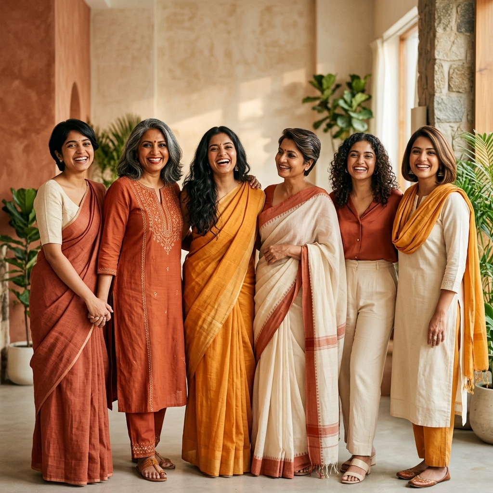
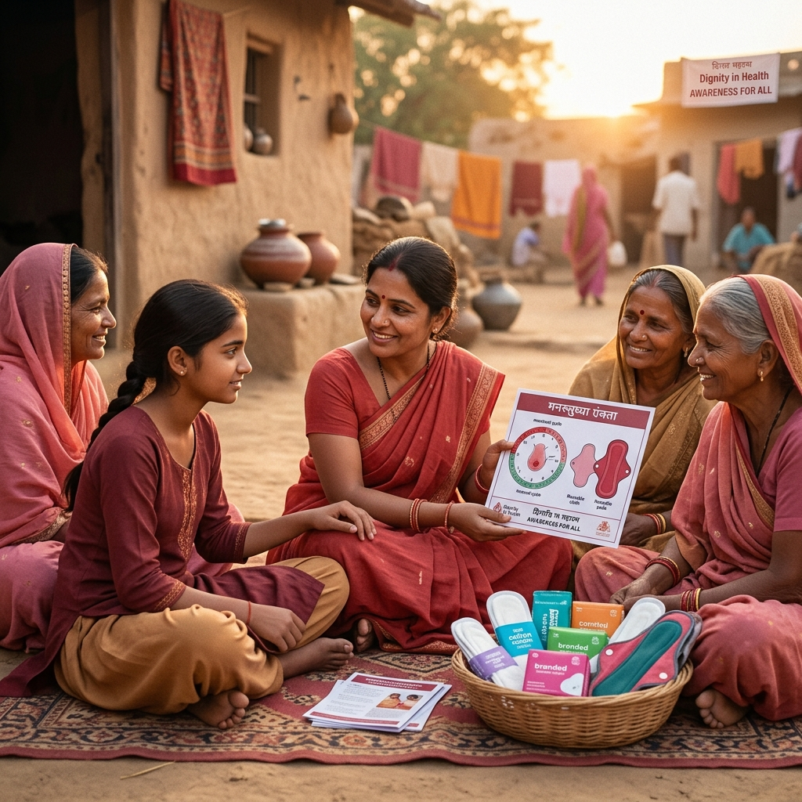

Empowering Her Journey, One Step at a Time
We provide holistic support to women and girls across India, enabling pathways from foundational education through health dignity and skill training to community leadership.

The Empowerment Journey
We believe empowerment is not a singular action, but a continuous path of transformation. Here is the journey we support each woman through.
1. Education Access
"Knowledge is the first door." We secure primary learning enrollments, distribution of study aids, and academic scholarships for girls in underprivileged environments.
2. Rights & Health Awareness
"Understanding Her Rights & Health." We conduct essential workshops on legal literacy, safety rights, preventive health, and menstrual hygiene to ensure physical and social dignity.
3. Skill Development
"Building Her Capability." Providing targeted vocational training, digital literacy lessons, financial capability courses, and hand-craft training to unlock self-sustenance.
4. Building Confidence
"Believing in Her Potential." Through structured support networks, mental health counseling, public speaking guidance, and career mentorship, she finds her voice.
5. Community Leadership
"Leading Her Community." Graduates are placed in local coordinator roles, spearhead civic initiatives, and mentor the next cohort of girls starting the journey.
About Our Foundation
She Can Foundation is built on transparency, grassroots action, and an unwavering commitment to women-led progress.
Our Mission
To enable underrepresented girls and women to challenge structural vulnerability and realize their aspirations by providing access to life-changing education, health consciousness, and skill validation.
Our Vision
A society where gender boundaries are dissolved, and every woman has the economic autonomy, health dignity, and leadership capacity to shape her own destiny and guide her community.
Our Core Values
Our Key Focus Areas
We address the multi-dimensional needs of women empowerment through seven targeted focus programs. Click any area to learn how we execute it.
Education Access
Sponsoring scholastic entry, distributing educational supplies, and offering mentorship to reduce girl-child dropout rates.
Healthcare Awareness
Delivering primary wellness diagnostics, preventive care education, and mental wellbeing resources directly to communities.
Menstrual Hygiene
Dismantling historical stigmas, distributing sanitary kits, and setting up sustainable disposal units in local schools.
Skill Development
Equipping women with modern digital literacy, vocational competencies, and trade skills for independent livelihoods.
Community Outreach
Conducting localized door-to-door interactions and organizing self-help groups to foster close community safety nets.
Volunteer Pathways
Structuring internship avenues for youths and professionals to share administrative, teaching, or field expertise.
Breaking the Silence on Period Poverty
In many underserved areas, adolescent girls regularly miss 5-7 days of school every month simply because they lack clean sanitary supplies and privacy. This breaks their learning continuity and leads to eventual dropout. She Can Foundation is addressing this directly by destigmatizing menstruation, delivering clean supplies, and installing sanitation equipment.

Stories of Impact
Aggregate statistics show scale, but human narratives prove depth. Read how She Can Foundation has supported women to rewrite their life paths.
How Can You Help?
We respect different capacity and means. Choose a pathway that matches your interest and align with our goals.
Become a Grassroots Volunteer
Work on the ground alongside our coordinators, tutoring girls, managing checking drives, or teaching digital courses. We provide complete training and an organizational certificate.
Spread Our Message
Stigma thrives in silence. You can advocate for period dignity and women's rights by sharing infographics, organizing student discussions, or advocating digital campaigns.
Corporate CSR Partnerships
We work with organizations to scale health programs and scholarship foundations. Build transparency reports together to prove how corporate aid translates to rural development.
Your Journey With She Can Starts Here
Whether you have a few hours a week or are looking for a dedicated student internship, your contribution matters. Share your email and we'll reach out with next steps.
Privacy Assurance: We only contact you regarding active volunteer opportunities. No spam.
Thank You for Reaching Out!
We've received your request. A She Can community coordinator will contact you at your email within 2 business days to schedule an introduction.